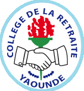
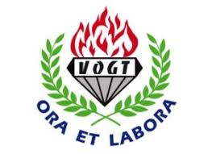

COLLEGE JEAN TABILe collège Jean-Tabi (CJT) est un établissement scolaire privé catholique d'enseignement secondaire général situé dans la ville de Yaoundé, capitale du Cameroun. Fondé en 1956 par les pasteurs et les fidèles de la paroisse d’Etoudi en mémoire de l’abbé Jean Tabi (1908–1951)[1] [archive], le collège devient une œuvre diocésaine en 1971. Et depuis 1975 il est dirigé par la congrégation des Sœurs Servantes du Saint-Cœur de Marie (SSCM) Le collège Jean-Tabi est l'un des établissements scolaires ayant le plus fort taux de réussite au Baccalauréat au Cameroun. Premier taux de réussite au Baccalauréat en 2007, il figure régulièrement en tête du palmarès annuel des lycées et collèges établi par l'Office du baccalauréat du Cameroun (OBC)1,2. |
|
COLLEGE DE LA RETRAITELe collège de la Retraite est un établissement d'enseignement secondaire camerounais dirigé par des religieux situé sur l'avenue Konrad Adenauer à Yaoundé, capitale du Cameroun. Le collège de la Retraite a l'un des plus forts taux de réussite au baccalauréat du Cameroun, il figure régulièrement dans le peloton de tête du palmarès annuel des lycées et collèges établi par l'office du baccalauréat du Cameroun (OBC)1,2,3, il figure aussi en tête du panthéon national des bonnes mentions à l'examen du baccalauréat établi pour la dernière fois en février 2015. En 1960, le Cameroun accueille les sœurs de la Retraite qui ont été fortement initiées dans le domaine de l'enseignement, le collège du Saint-Esprit est alors dirigé par les Sœurs de la Retraite, à cet effet il change de nom pour porter le nom qu'il a aujourd'hui à savoir le collège de la Retraite. |
 |
COLLEGE FRANCOIS XAVIER-VOGTLe collège Francois-Xavier Vogt, plus communément appelé collège Vogt, est un établissement d'enseignement secondaire camerounais dirigé par des religieux et situé à Yaoundé, capitale du Cameroun. Le collège Francois-Xavier Vogt a l'un des plus forts taux de réussite au baccalauréat du Cameroun. Premier taux de réussite au bac en 2008, il figure régulièrement en tête du palmarès annuel des lycées et collèges établi par l'Office du baccalauréat du Cameroun (OBC). C'est au milieu des années 1940, juste après la Seconde Guerre mondiale, que Mgr François-Xavier Vogt, alors administrateur apostolique de la région de Yaoundé, lance l'idée de fonder le collège qui portera par la suite son nom. Son objectif est de former les jeunes Camerounais dans la discipline, l’éthique et la foi chrétienne, pour que demain, ils puissent répondre aux défis et enjeux divers qui interpelleront leur pays. Le projet d’éducation ainsi élucidé prend forme dès septembre 1947. |
 |